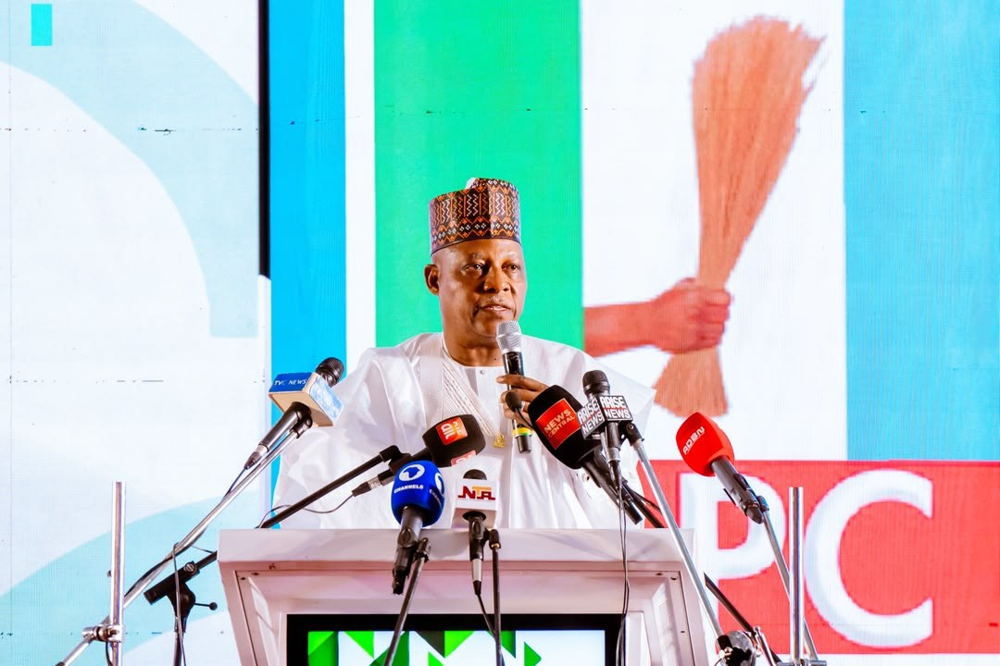

APC Rally: Hard part of our economic reset over; next term is pure harvest – VP Shettima

Vice President Kashim Shettima said the most difficult phase of the federal government’s economic reforms had passed, arguing that a second term under President Bola Tinubu would bring growth and tangible benefits to Nigerians. Speaking at an All Progressives Congress (APC) campaign rally in Calabar on Monday, he asked voters to renew the mandates of Tinubu and Shettima, and of Cross River Governor Bassey Otu and Deputy Governor Peter Odey, in the 2027 elections. Shettima said other parties lacked the capacity to change the economy’s direction, while also insisting that support for the government should not prevent citizens from questioning its performance.
He pointed to projects and proposals he said could support Cross River’s development. These included the Lagos-Calabar Coastal Highway, which he said would link coastal communities, ease transport, support tourism and attract investment. Shettima said the federal government had approved and backed the proposed Bakassi Deep Sea Port, describing it as a potential maritime gateway that could generate jobs and encourage industrial activity. He also said a proposal to locate the Gulf of Guinea Commission Secretariat in Calabar could bring diplomatic and commercial activity to the state.
Shettima said the federal government recognised Cross River’s coastal status and was prepared to help resolve a dispute over 46 oil wells. He linked a resolution to opportunities in maritime investment and the blue economy. On education, he cited the state’s participation in NELFUND education funding and said the initiative could ease pressure on parents and help young people continue their studies. He also referred to Project HOPE, describing its aims as improving foundational learning, teacher development, school management and access to education.
APC National Chairman Nentanwe Yilwatda and campaign council director general Abdulaziz Yari also called for support for Tinubu’s re-election. Otu praised the president’s leadership and said Cross River residents would back the APC ticket, pointing to policies in agriculture, education, industry and security. At a separate visit to the Obong of Calabar, Shettima paid homage to the traditional institution and outlined the party’s electoral aspirations. The Obong called for unity and peaceful coexistence, and praised the administration’s willingness to undertake difficult reforms.
Source: Premium Times